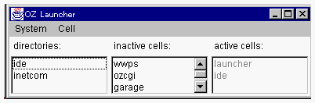

| |
ランチャには、OZホームに生成されたグローバルオブジェクトがリストされています。
GODは文字列、あるいは、文字列をドットでつないだ識別子です。


| dorothy | ランチャが活性化されたときに inactive cells:/active cells: にdorothy が表示されます。 | |
| emerald.dorothy | ランチャが活性化されたときには、directories: にemerald が表示されています。emerald をダブルクリックすると、inactive cells:/active cells: にdorothy が表示されます。 | |
| usa.kansas.dorothy | ランチャが活性化されたときには、directories: にusa が表示されています。usa をダブルクリックすると、directories: に kansas が表示されます。kansas をダブルクリックすると、inactive cells:/active cells: にdorothy が表示されます。 |
| |